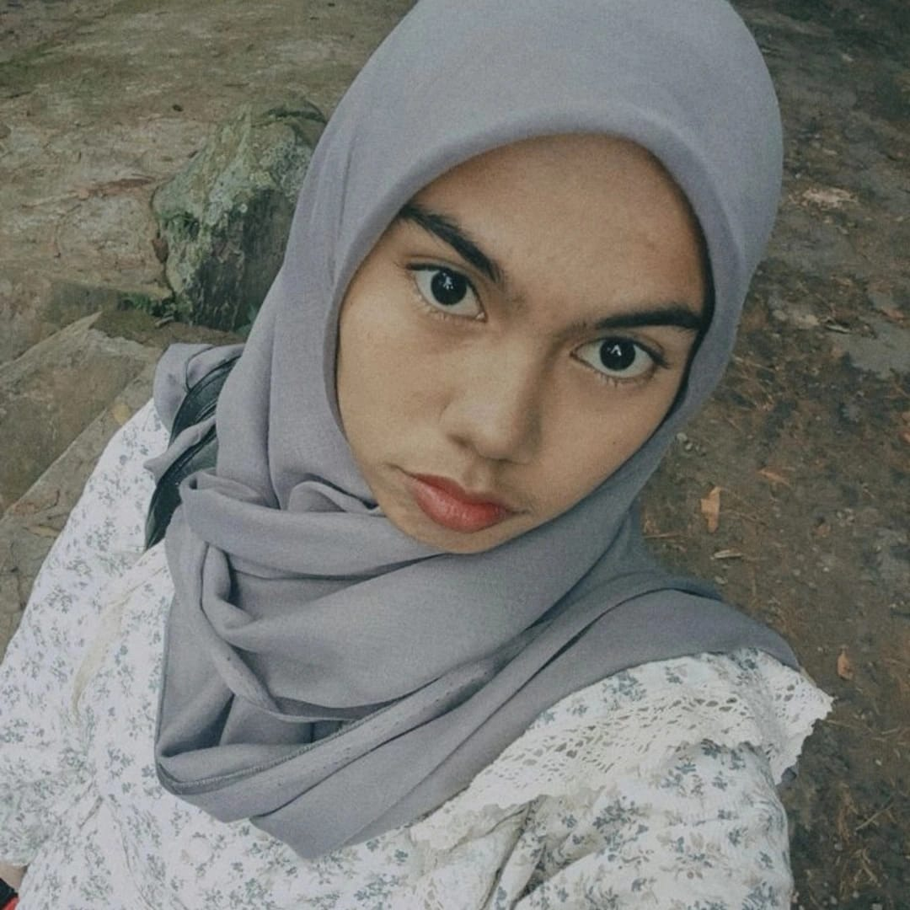

Annyeong, welcome to my portfolio. Nama aku Nadya Zahra Aulia, Mahasiswa semester 4 Program studi Sistem Informasi aku kuliah di Universitas Sebelas April Sumedang
"Mungkin aku melakukan kesalahan kemarin, tapi aku yang kemarin tetaplah aku. Aku adalah aku dengan segala kesalahanku. Besok saya mungkin akan sedikit lebih bijaksana, dan itu juga saya." - Kim Namjoon
| Sekolah/Universitas | Tahun |
|---|---|
| SDN Cimalaka 2 | 2012-2018 |
| SMPN 1 Cimalaka | 2018-2021 |
| SMAN 1 Cimalaka | 2021-2024 |
| Universitas Sebelas April Sumedang | 2024-Sekarang |